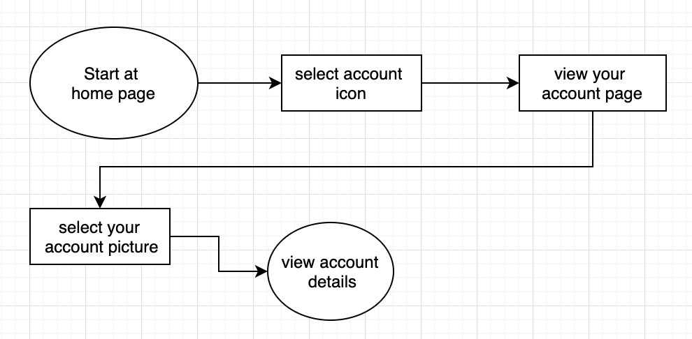

Cloud Cooking
Cloud Cooking is an application designed to allow the user to store, share, save, create, and explore thousands of recipes all in one location. Cloud storage is a relatively new and exciting service that many people and/or businesses seem to be using. While Cloud Cooking is a service that uses cloud storage, it has many more benefits added for the user.
Problem
After doing a bit of research, I discovered that there was a need for an application that allows a user to save their own recipes, share recipes, explore new recipes, and connect with other users all in one place.
Solution
After a lot of carefully conducted research and development, Cloud Cooking became our solution to the many issues addressed. With the ability to save, share, create, and explore recipes all in one location, our potential users would have all of their problems solved.
My Role
I was the main researcher on the project, using many different research tactics to discover the problems that needed to be solved. I completed the branding work on the project, and I designed the application. Working with my mentor from Bloc, and the grading team, I was able to complete this project.
Competitive Analysis
I started with a competitive analysis of three different websites, Pinterest, Google Drive, and Food Network. All sites have different end goals, but each utilize cloud storage similarly.
Food Network
Strengths
• Adding your personal recipes to the site
• Can save Food Network recipes to your account
Weaknesses
• No ways of collaboration within the application
Google Drive
Strengths
• Easy to share between users/non-users
• Live collaboration is very simple within the applicaiton
Weaknesses
• Documents/sheets etc. must be created on the site in order to make changes
Strengths
• Clean and interesting layout - pictures keep users engaged
• Grouping ideas efficiently
Weaknesses
• All sorts of categories are on one page - could seem confusing
User Survey
After figuring out what I would like to include in this application, I conducted a survey to see what potential users would like to have included. Out of the 16 potential users I surveyed, 15 of them have used cloud storage. 93% of the potential users that have used cloud storage have used Google Drive and 73% have used Pinterest. 80% liked that these sites offer the option to save content and share content and 66% liked to be able to share with others. When asked about their cooking preferences, 69% of potential users use recipes, and 69% have saved recipes online. After discovering these things about the potential users surveyed, figuring out what elements needed to be included became more clear.
User Personas
Creating user personas was an interesting way to see how the users would be using Cloud Cooking. I created two user personas based on the responses I received from my survey. The personas I ended up with were “Sara Shares A Lot” and “Diana Doer. Sara is a 22 year old girl trying to cook recipes that take the shortest amount of time, but look the coolest on her Instagram feed. She is a novice cook but knows all the ins and outs of cloud storage. Diana is a 61 year old retired stay-at-home mom who loves to have all of her friends over for dinner parties. She is advanced in cooking, but lacks in cloud storage experience.
Key Takeaways
Potential users could be completely different from one another but are ultimately looking to do similar tasks. Being able to connect to all types of uses is the utmost goal.
Diana Doer
Goals
1. Share recipes with her friends and daughter-in-law
2. Have all of her recipes in one place
Frustrations
1. Losing a recipe that's been in the family for decades
2. Too many different applications
Sarah Shares A Lot
Goals
1. Share recipes with her followers
2. Easily upload pictures and videos of her recipes
Frustrations
1. Not being able to use the same application on all of her devices
2. Too many different applications
User Flows
Creating the user flows helped me figure out how many steps each of the high priority tasks would need. Doing this allowed me to prepare myself for how many screens each task would need, and how all of those screens would connect.
Key Takeaways
After creating the “create an account” user flow, I realized the need for a welcome screen. This screen will be presented after signing in, signing up with google, or signing up with your email. Doing this allows for a more streamlined sign in/up process. The save and share user flows were short, so I created a pop up screen small enough for a “saved” and “shared” so to not distract from other longer user flows that would need more attention.
Branding
The branding step helped open up my creative side before starting on the mock ups. Taking this step in between wireframes and mockups helped me take a step back from the wireframes to come back and look at them with fresh eyes. While making the style board, I thought back to the user personas, and what types of things “Sara” and “Diana” would like to see. I browsed many photo websites, spent a lot of time on Pinterest, and came up with a warm pastel color as the main brand color. Using the moodboard to look back to during the creation of the mockups was a helpful reminder of the vibe and aesthetic I was hoping to implement into this application.
Key Takeaways
While sketching the brand logos, I created many different logo ideas making it easier to choose what would work best. In the beginning stages of the logo creation I added “Cloud Cooking” on the inside of the spatula. After making different sizes of the logo I noticed that the text was getting harder and harder to read. After I took the text out of the spatula I was able to make a smaller sized logo while still being able to see the text in a normal size. The brand logo went through many changes, all within a couple of hours. But the biggest change the logo went through was after it was added to the mockups. I realized that the logo I was hoping would work best was a bit too long and skinny for where I wanted it to be placed. I shed the “Cloud Cooking” text from the logo within the navigation bar and from there the application was created.

Sketching, Wireframes and Mockups
The wireframes and mockups were by far the most revised step in this process, definitely taking up the most time. Starting with sketches and ending with three sets of high fidelity mockups, this step helped me sculpt the application to look its best.
Starting with the wireframes, I was able to decide where on the application I wanted each item to go, using the user stories to make sure that the high priority tasks were easily seen on the dashboard. I started the wireframes as a website and ended the high fidelity mockups as a mobile application, after speaking with my mentor about how this product would be used and where (most likely in the kitchen - while cooking) we decided that a mobile application would be more practical.
Having the wireframes as a website firsthelped me decide how to make sure the mobile application fit (almost) everything the website wireframes fit on the homescreen/dashboard. After each iteration of the wireframes and mockups I tested the prototype on friends and family, to see what needed to be fixed or added. You can see each stage has the same idea, the dashboard having recipes available to view, but little changes added here and there for easier navigation.
Within the final mockup iteration, I changed the sizes of many features to make it easier to select the correct item. I noticed that creating a mobile application on a computer can be tricky, I zoomed in to each screen and did not realize that the size I had zoomed in to was not the correct size of a mobile phone. After testing the prototype it was easier for me to understand the need for larger features.


User Testing
User testing each step of the design process allowed me to see things that I usually would not have noticed on my own. One of the many things I took from the first round of user testing, on the Figma wireframes, was that the potential user did not understand how to get out of some of the pop up pages without a back button. Adding the back button allowed the user to use the outside of the screen, as I had imagined the user would, but also use the back button that they are used to. After my second round of prototype testing, I had a few more changes suggested that needed to be addressed. The logo on the navigation bar made it look too busy, along with the bold outline of the icons. Some elements couldn’t be seen from the dashboard, so i created the hamburger menu. The third round of prototype testing, I tested on more people. One user thought the drop down for search was too small, she was unable to select the correct item. The same occurred with clicking the search bar at the top as well. So I made both of those items bigger and easier to navigate around. My final prototype was easier to navigate - no matter the size of your thumbs - had more elements added and able to be viewed on one screen, and had cleaner looking icons.
Conclusion
Each step helped me decide which elements were necessary, which could be removed, what was too small, what needed a color change, and so forth. I am very fortunate to have people close to me to test each step of the process on, which helped immensely. I had some doubts going into this project that my idea for Cloud Cooking would not work the way I had hoped. With each step, and the help from my mentor, I was able to make my idea work the way I had intended it to.
I was surprised most to realize how different designers make the website application from the mobile application, without it appearing to be different. I spent a lot of time looking at the Pinterest website and application, to see how their designers layed out certain elements, and noticed many features from the web application different from the mobile application, but still having every high fidelity task available to the user. I made sure to keep my design - web and mobile - similar, while still creating an easy navigation for both.
If given more time, I would have added more features to the prototype to make sure that most of the medium and some low fidelity user tasks were available to the user. While completing this project I learned how many steps are involved, and extremely necessary, for a project such as this. In the future I will be sure to take each step very carefully, fully knowing now how important that is to have a nicely finished product.